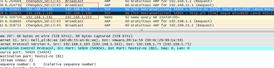

1 LVS介绍
1.1 简介
负载均衡技术有很多实现方案，有基于DNS域名轮流解析的方法、有基于客户端调度访问的方法、有基于应用层系统负载的调度方法，还有基于IP地址的调度方法。本文介绍基于传输层的负载均衡器LVS。
LVS是Linux Virtual Server的简称，也就是Linux虚拟服务器, 用现在的观点来看就是个4层（传输层tcp/udp）的负责均衡器。 它是一个由章文嵩博士发起的自由软件项目，它的官方站点是www.linuxvirtualserver.org。现在LVS已经是 Linux标准内核的一部分，在Linux2.4内核以前，使用LVS时必须要重新编译内核以支持LVS功能模块，但是从Linux2.4内核以后，已经完全内置了LVS的各个功能模块，无需给内核打任何补丁，可以直接使用LVS提供的各种功能。
LVS技术要达到的目标是：通过LVS提供的负载均衡技术和Linux操作系统实现一个高性能、高可用的服务器群集，它具有良好可靠性、可扩展性和可操作性。从而以低廉的成本实现最优的服务性能。
LVS自从1998年开始，发展到现在已经是一个比较成熟的技术项目了。可以利用LVS技术实现高可伸缩的、高可用的网络服务，例如WWW服务、Cache服务、DNS服务、FTP服务、MAIL服务、视频/音频点播服务等等，有许多比较著名网站和组织都在使用LVS架设的集群系统，例如：Linux的门户网站（www.linux.com）、向RealPlayer提供音频视频服务而闻名的Real公司（www.real.com）、全球最大的开源网站（sourceforge.net）等。
1.2 主要功能
LVS目前有三种IP负载均衡技术（VS/NAT、VS/TUN和VS/DR）；十种调度算法（rrr|wrr|lc|wlc|lblc|lblcr|dh|sh|sed|nq）
1.3 优点
1.3.1 功能特性
1、抗负载能力强、是工作在网络4层之上仅作分发之用，没有流量的产生；
2、配置性比较低，这是一个缺点也是一个优点，因为没有可太多配置的东西，所以并不需要太多接触，大大减少了人为出错的几率；
3、工作稳定，自身有完整的双机热备方案；
4、无流量，保证了均衡器IO的性能不会收到大流量的影响；
5、应用范围比较广，可以对所有应用做负载均衡；
1.3.2 高可用性
LVS是一个基于内核级别的应用软件，因此具有很高的处理性能，用LVS构架的负载均衡集群系统具有优秀的处理能力，每个服务节点的故障不会影响整个系统的正常使用，同时又实现负载的合理均衡，使应用具有超高负荷的服务能力，可支持上百万个并发连接请求。如配置百兆网卡，采用VS/TUN或VS/DR调度技术，整个集群系统的吞吐量可高达1Gbits/s；如配置千兆网卡，则系统的最大吞吐量可接近10Gbits/s。
1.3.3 高可靠性
LVS负载均衡集群软件已经在企业、学校等行业得到了很好的普及应用，国内外很多大型的、关键性的web站点也都采用了LVS集群软件，所以它的可靠性在实践中得到了很好的证实。有很多以LVS做的负载均衡系统，运行很长时间，从未做过重新启动。这些都说明了LVS的高稳定性和高可靠性。
1.3.4 适用环境
LVS对前端Director Server目前仅支持Linux和FreeBSD系统，但是支持大多数的TCP和UDP协议，支持TCP协议的应用有：HTTP，HTTPS ，FTP，SMTP，，POP3，IMAP4，PROXY，LDAP，SSMTP等等。支持UDP协议的应用有：DNS，NTP，ICP，视频、音频流播放协议等。
LVS对Real Server的操作系统没有任何限制，Real Server可运行在任何支持TCP/IP的操作系统上，包括Linux，各种Unix（如FreeBSD、Sun Solaris、HP Unix等），Mac/OS和Windows等。
1.4 缺点
需要网络环境的支持
不能针对上层协议分析
如果做成硬件会更完美
1.5 类似产品
1.5.1 介绍
现在网络中常见的负载均衡主要分为两种：一种是通过硬件来进行进行，常见的硬件有比较昂贵的NetScaler、F5、Radware和Array等商用的负载均衡器，也有类似于LVS、Nginx、HAproxy的基于Linux的开源的负载均衡策略。
商用负载均衡里面NetScaler从效果上比F5的效率上更高。对于负载均衡器来说，不过商用负载均衡由于可以建立在四~七层 协议之上，因此适用 面更广所以有其不可替代性，他的优点就是有专业的维护团队来对这些服务进行维护、缺点就是花销太大，所以对于规模较小的网络服务来说暂时还没有需要使用。
另一种负载均衡的方式是通过软件：比较常见的有LVS、Nginx、HAproxy等，其中LVS是建立在四层协议上面的，而另外Nginx和HAproxy是建立在七层协议之上的，下面分别介绍关于
Nginx的特点是：
1、工作在网络的7层之上，可以针对http应用做一些分流的策略，比如针对域名、目录结构；
2、Nginx对网络的依赖比较小；
3、Nginx安装和配置比较简单，测试起来比较方便；
4、也可以承担高的负载压力且稳定，一般能支撑超过1万次的并发；
5、Nginx可以通过端口检测到服务器内部的故障，比如根据服务器处理网页返回的状态码、超时等等，并且会把返回错误的请求重新提交到另一个节点，不过其中缺点就是不支持url来检测；
6、Nginx对请求的异步处理可以帮助节点服务器减轻负载；
7、Nginx能支持http和Email，这样就在适用范围上面小很多；
8、不支持Session的保持、对Big request header的支持不是很好，另外默认的只有Round-robin和IP-hash两种负载均衡算法。
HAProxy的特点是：
1、HAProxy是工作在网络7层之上。
2、能够补充Nginx的一些缺点比如Session的保持，Cookie的引导等工作
3、支持url检测后端的服务器出问题的检测会有很好的帮助。
4、更多的负载均衡策略比如：动态加权轮循(Dynamic Round Robin)，加权源地址哈希(Weighted Source Hash)，加权URL哈希和加权参数哈希(Weighted Parameter Hash)已经实现
5、单纯从效率上来讲HAProxy更会比Nginx有更出色的负载均衡速度。
6、HAProxy可以对Mysql进行负载均衡，对后端的DB节点进行检测和负载均衡。
1.5.2 软负载均衡器性能对比
上图是网上的数据，LVS的实际性能可能没有展示出来，肯定要比Nginx的并发量高。
2 LVS原理篇
2.1 工作模式
LVS的IP负载均衡技术是通过IPVS模块来实现的，IPVS是LVS集群系统的核心软件，它的主要作用是：安装在Director Server上，同时在Director Server上虚拟出一个IP地址，用户必须通过这个虚拟的IP地址访问服务。这个虚拟IP一般称为LVS的VIP，即Virtual IP。访问的请求首先经过VIP到达负载调度器，然后由负载调度器从Real Server列表中选取一个服务节点响应用户的请求。
当用户的请求到达负载调度器后，调度器如何将请求发送到提供服务的Real Server节点，而Real Server节点如何返回数据给用户，是IPVS实现的重点技术，IPVS实现负载均衡机制有三种，分别是NAT、TUN和DR。
注意：
director server 、ld 、lvs负责均衡器、调度器都是同一个概念
realserver 、后端服务器也代表一个意思。
2.1.1 转发机制
2.1.1.1 三种转发机制
VS/NAT： 即（Virtual Server via Network Address Translation）
也就是网络地址翻译技术实现虚拟服务器，当用户请求到达调度器时，调度器将请求报文的目标地址（即虚拟IP地址）改写成选定的Real Server地址，同时报文的目标端口也改成选定的Real Server的相应端口，最后将报文请求发送到选定的Real Server。在服务器端得到数据后，Real Server返回数据给用户时，需要再次经过负载调度器将报文的源地址和源端口改成虚拟IP地址和相应端口，然后把数据发送给用户，完成整个负载调度过程。
可以看出，在NAT方式下，用户请求和响应报文都必须经过Director Server地址重写，当用户请求越来越多时，调度器的处理能力将称为瓶颈。
VS/TUN ：即（Virtual Server via IP Tunneling）l
也就是IP隧道技术实现虚拟服务器。它的连接调度和管理与VS/NAT方式一样，只是它的报文转发方法不同，VS/TUN方式中，调度器采用IP隧道技术将用户请求转发到某个Real Server，而这个Real Server将直接响应用户的请求，不再经过前端调度器，此外，对Real Server的地域位置没有要求，可以和Director Server位于同一个网段，也可以是独立的一个网络。因此，在TUN方式中，调度器将只处理用户的报文请求，集群系统的吞吐量大大提高。
VS/DR： 即（Virtual Server via Direct Routing）l
也就是用直接路由技术实现虚拟服务器。它的连接调度和管理与VS/NAT和VS/TUN中的一样，但它的报文转发方法又有不同，VS/DR通过改写请求报文的MAC地址，将请求发送到Real Server，而Real Server将响应直接返回给客户，免去了VS/TUN中的IP隧道开销。这种方式是三种负载调度机制中性能最高最好的，但是必须要求Director Server与Real Server都有一块网卡连在同一物理网段上。
2.1.1.2 三种转发机制流程
2.1.1.2.1 NAT

1. 客户端发起请求到load balancer的虚拟ip
2. load banlancer把客户请的目标地址改写为其中一个real server的，源地址改成不变。
3. realserver接受请求，并返回给load banlancer响应
4. load banlancer接受到响应，修改目标地址为不变，源地址改成自己的。
5. 客户端接受loader banlancer的响应
注意：
如果客户端和realserver在同一个网段，不会执行nat转换，realserver直接返回响应,客户端也会拒收此报文。
2.1.1.2.2 TUNNEL

1. 客户端发起请求到load balancer的虚拟ip
2. load banlancer把客户的请求包包裹，然后转发给其中的一个real server。
3. realserver接受请求，解包。得到客户端发来的原始包。
4. realserver处理，把结果通过vip直接返回给客户端。
5. 客户端接受real server的响应。
注意：
a. load balancer和realserver 直接通过ip tunnel技术重新封装、解包
b. load balancer和 realserver 使用相同的vip
c. load balnacer和realserver可以不再同一个网络
2.1.1.2.3 DR

1. 客户端发起请求到load balancer的虚拟ip
2. load banlancer把客户发送的包，修改源mac地址为vip的，目的mac地址为realserver的，然后发送给realserver
3. realserver接受请求,并处理，然后把结果通过vip直接返回给客户端。
4. 客户端接受real server的响应。
注意
a. load balancer和 realserver 使用相同的vip
b. load balancer和realserver必须在同一个网络，因为load balancer需要知道realserver的mac地址。
2.1.1.2.4 LVS-DR工作原理详解 (51CTO)
如下图所示：VS/DR的体系结构：
我将结合这幅原理图及具体的实例来讲解一下LVS-DR的原理，包括数据包、数据帧的走向和转换过程。
官方的原理说明：Director接收用户的请求，然后根据负载均衡算法选取一台realserver，将包转发过去，最后由realserver直接回复给用户。
实例场景设备清单：

说明：我这里为了方便，client是与vip同一网段的机器。如果是外部的用户访问，将client替换成gateway即可，因为IP包头是不变的，变的只是源mac地址。
① client向目标vip发出请求，Director接收。此时IP包头及数据帧头信息如下：

② VS根据负载均衡算法选择一台active的realserver(假设是192.168.57.122)，将此RIP所在网卡的mac地址作为目标mac地址，发送到局域网里。此时IP包头及数据帧头信息如下：
③ realserver(192.168.57.122)在局域网中收到这个帧，拆开后发现目标IP(VIP)与本地匹配，于是处理这个报文。随后重新封装报文，发送到局域网。此时IP包头及数据帧头信息如下：
④ 如果client与VS同一网段，那么client(192.168.57.135)将收到这个回复报文。如果跨了网段，那么报文通过gateway/路由器经由Internet返回给用户。
说明：
lvs的作者对这个写了详细的描述，请参考 http://www.linuxvirtualserver.org/zh/lvs3.html LVS集群中的IP负载均衡技术
2.1.1.3 三种转发机制的优缺点
◆Virtual Server via NAT
VS/NAT 的优点是服务器可以运行任何支持TCP/IP的操作系统，它只需要一个IP地址配置在LVS主机上，服务器组可以用私有的IP地址。缺点是它的扩充能力有限，当服务器结点数目升到20时，LVS主机本身有可能成为系统的新瓶颈，因为在VS/NAT中请求和响应封包都需要通过负载平衡LVS主机。在 Pentium 166主机上测得重写封包的平均延时为60us，假设TCP封包的平均长度为536 Bytes，则LVS主机的最大吞吐量为8.93 MBytes/s。再假设每台服务器的吞吐量为600KBytes/s，这样一个LVS主机可以带动16台服务器。
◆Virtual Server via IP Tunneling
在VS/TUN 的集群系统中，负载平衡LVS主机只将请求分配到不同的实际服务器，实际服务器将应答的资料直接返回给用户。这样，负载平衡LVS主机就可以处理巨量的请求，而不会成为系统的瓶颈。即使负载平衡LVS主机只有100Mbps的全双工网卡，虚拟服务器的最大吞吐量可以达到几Gbps。所以，VS/TUN可以极大地增加负载平衡LVS主机分配的服务器数量，它可以用来构建高性能超级服务器。VS/TUN技术对服务器的要求是所有的服务器必须支持"IP Tunneling"或者"IP Encapsulation"协议。目前，VS/TUN 的后端服务器主要运行Linux操作系统。因为"IP Tunneling"正成为各个操作系统的标准协议，所以VS/TUN也会适用运行其它操作系统的后端服务器。
◆Virtual Server via Direct Routing
同VS/TUN 一样，VS/DRLVS主机只处理客户到服务器端的连接，响应资料可以直接从独立的网络路由返回给客户。这可以极大地提高LVS集群系统的伸缩性。同 VS/TUN相比，这种方法没有IP隧道的开销，但是要求负载平衡LVS主机与实际服务器都有一块网卡连在同一物理网段上，服务器网络设备或者设备别名不作 ARP 响应。
2.1.1.4 结论
| VS/NAT | VS/TUN | VS/DR |
服务器(OS) | 任意 | 支持隧道 | 多数(支持Non-arp ) |
服务器网络 | 私有网络 | 局域网/广域网 | 局域网 |
服务器数目(100M网络) | 10~20 | 100 | 多(100) |
服务器网关 | 负载均衡器 | 自己的路由 | 自己的路由 |
效率 | 一般 | 高 | 最高 |
三种IP负载均衡技术中特别是后两种技术VS/TUN，VS/DR极大地提高系统的伸缩性。
2.1.2 调度算法
Director在接收到来自于Client的请求时，会基于"schedule"从RealServer中选择一个响应给Client。ipvs支持以下调度算法：（1、2为静态调度算法，3、4、5、6、7、8为动态调度算法）
1、 轮询（round robin, rr)
2． 加权轮询(Weighted round robin, wrr)——
新的连接请求被轮流分配至各RealServer；算法的优点是其简洁性，它无需记录当前所有连接的状态，所以它是一种无状态调度。轮叫调度算法假设所有服务器处理性能均相同，不管服务器的当前连接数和响应速度。该算法相对简单，不适用于服务器组中处理性能不一的情况，而且当请求服务时间变化比较大时，轮叫调度算法容易导致服务器间的负载不平衡。
2、目标地址散列调度（Destination Hashing，dh）
算 法也是针对目标IP地址的负载均衡，但它是一种静态映射算法，通过一个散列（Hash）函数将一个目标IP地址映射到一台服务器。目标地址散列调度算法先 根据请求的目标IP地址，作为散列键（Hash Key）从静态分配的散列表找出对应的服务器，若该服务器是可用的且未超载，将请求发送到该服务器，否则返回空。
3、源地址散列调度（Source Hashing，sh）
算 法正好与目标地址散列调度算法相反，它根据请求的源IP地址，作为散列键（Hash Key）从静态分配的散列表找出对应的服务器，若该服务器是可用的且未超载，将请求发送到该服务器，否则返回空。它采用的散列函数与目标地址散列调度算法 的相同。除了将请求的目标IP地址换成请求的源IP地址外，它的算法流程与目标地址散列调度算法的基本相似。在实际应用中，源地址散列调度和目标地址散列 调度可以结合使用在防火墙集群中，它们可以保证整个系统的唯一出入口。
4、最少连接(least connected, lc)， 加权最少连接(weighted least connection, wlc)——
新的连接请求将被分配至当前连接数最少的RealServer；最小连接调度是一种动态调度算法，它通过服务器当前所活跃的连接数来估计服务器的负载情况。调度器需要记录各个服务器已建立连接的数目，当一个请求被调度到某台服务器，其连接数加1；当连接中止或超时，其连接数减一。
lc：256*A+I=当前连接数 wlc：（256*A+I）/W=当前连接数 【A：活动连接数 I:非活动连接数 W：权重值】
5、基于局部性的最少链接调度（Locality-Based Least Connections Scheduling，lblc）——
针对请求报文的目标IP地址的负载均衡调度，目前主要用于Cache集群系统，因为在Cache集群中客户请求报文的目标IP地址是变化的。这里假设任何后端服务器都可以处理任一请求，算法的设计目标是在服务器的负载基本平衡情况下，将相同目标IP地址的请求调度到同一台服务器，来提高各台服务器的访问局部性和主存Cache命中率，从而整个集群系统的处理能力。LBLC调度算法先根据请求的目标IP地址找出该目标IP地址最近使用的服务器，若该服务器是可用的且没有超载，将请求发送到该服务器；若服务器不存在，或者该服务器超载且有服务器处于其一半的工作负载，则用“最少链接”的原则选出一个可用的服务器，将请求发送到该服务器。
6、带复制的基于局部性最少链接调度（Locality-Based Least Connections with Replication Scheduling，lblcr）
——也是针对目标IP地址的负载均衡，目前主要用于Cache集群系统。它与LBLC算法的不同之处是它要维护从一个目标IP地址到一组服务器的映射，而 LBLC算法维护从一个目标IP地址到一台服务器的映射。对于一个“热门”站点的服务请求，一台Cache 服务器可能会忙不过来处理这些请求。这时，LBLC调度算法会从所有的Cache服务器中按“最小连接”原则选出一台Cache服务器，映射该“热门”站点到这台Cache服务器，很快这台Cache服务器也会超载，就会重复上述过程选出新的Cache服务器。这样，可能会导致该“热门”站点的映像会出现在所有的Cache服务器上，降低了Cache服务器的使用效率。LBLCR调度算法将“热门”站点映射到一组Cache服务器（服务器集合），当该“热门”站点的请求负载增加时，会增加集合里的Cache服务器，来处理不断增长的负载；当该“热门”站点的请求负载降低时，会减少集合里的Cache服务器数目。这样，该“热门”站点的映像不太可能出现在所有的Cache服务器上，从而提供Cache集群系统的使用效率。LBLCR算法先根据请求的目标IP地址找出该目标IP地址对应的服务器组；按“最小连接”原则从该服务器组中选出一台服务器，若服务器没有超载，将请求发送到该服务器；若服务器超载；则按“最小连接”原则从整个集群中选出一台服务器，将该服务器加入到服务器组中，将请求发送到该服务器。同时，当该服务器组有一段时间没有被修改，将最忙的服务器从服务器组中删除，以降低复制的程度。
7、 最短的期望的延迟（Shortest Expected Delay Scheduling ,sed）
sed: (A+1)/w=当前连接数
8、最少队列调度（Never Queue Scheduling ,nq）
无需队列。如果有台realserver的连接数＝0就直接分配过去，不需要在进行sed运算
四、关于LVS追踪标记fwmark
如果LVS放置于多防火墙的网络中，并且每个防火墙都用到了状态追踪的机制，那么在回应一个针对于LVS的连接请求时必须经过此请求连接进来时的防火墙，否则，这个响应的数据包将会被丢弃
说明：作者写了详细的调度算法优缺点可以查看
http://www.linuxvirtualserver.org/zh/lvs4.html LVS集群的负载调度
3 LVS配置篇
3.1 LVS安装
从Linux内核版本2.6起，ip_vs code已经被整合进了内核中，因此，只要在编译内核的时候选择了ipvs的功能，您的Linux即能支持LVS。Linux 2.4.23以后的内核版本也整合了ip_vs code，但如果是更旧的内核版本，您得自己手动将ip_vs code整合进内核原码中，并重新编译内核方可使用lvs。
ipvsadm是用来与ipvs交互的命令行工具，它的作用表现在：
1、定义在Director上进行dispatching的服务(service)，以及哪此服务器(server)用来提供此服务；
2、为每台同时提供某一种服务的服务器定义其权重（即概据服务器性能确定的其承担负载的能力）
1. 查看版本
2. 内核是否支持ipvs
modprobe -l |grep ipvs
表明系统内核已经默认支持了IPVS模块。接着就可以安装IPVS管理软件了
3. 安装ipvs的管理软件
直接通过软件库安装
centos

suse

基于源代码构建


需要安装
please install the development package for popt which should
give you popt.h.
基于rpm包构建

Then, we can build the ipvsadm-1.24 rpm in the following command:
rpmbuild --rebuild ipvsadm-1.24-6.src.rpm
And install using: rpm -ivh /usr/src/redhat/RPMS/i386/ipvsadm-1.24-6.i386.rpm
验证

3.2 命令手册
操作虚拟服务
--add-service -A add virtual service with options
--edit-service -E edit virtual service with options
--delete-service -D delete virtual service
操作realserver
--add-server -a add real server with options
--edit-server -e edit real server with options
--delete-server -d delete real server
配置操作
--list -L|-l list the table
--clear -C clear the whole table
--restore -R restore rules from stdin
--save -S save rules to stdout
配置选项
Options:
--tcp-service -t service-address service-address is host[:port]
--udp-service -u service-address service-address is host[:port]
--fwmark-service -f fwmark fwmark is an integer greater than zero
--ipv6 -6 fwmark entry uses IPv6
调度方式
--scheduler -s scheduler one of rr|wrr|lc|wlc|lblc|lblcr|dh|sh|sed|nq,
the default scheduler is wlc.
--pe engine alternate persistence engine may be sip,
not set by default.
#session保持，保证客户端都发到同一个server上。-p指定多长时间。不指定时间，默认300秒
--persistent -p [timeout] persistent service
# 掩码，不同ip地址和掩码与得到的网络地址，启用一个网络地址，对应一个realserver
--netmask -M netmask persistent granularity mask
--real-server -r server-address server-address is host (and port)
转发模式
--gatewaying -g gatewaying (direct routing) (default)
--ipip -i ipip encapsulation (tunneling)
--masquerading -m masquerading (NAT)
# 负载的比例,默认值1，越大负载越高
--weight -w weight capacity of real server
--u-threshold -x uthreshold upper threshold of connections
--l-threshold -y lthreshold lower threshold of connections
3.3 常用命令
1． 查看配置

2． 保存配置到文件
ipvsadm -S >lvs.cfg
3． 加载配置
cat lvs.cfg |ipvsadm –R 或者 ipvsadm –R < lvs.cfg
4． 查看连接
ipvsadm -lcn
Prot LocalAddress:Port Conns InPkts OutPkts InBytes OutBytes
连接数 输入包 输出包 输入流量 输出流量
5． 连接清零
ipvsadm –Z
6. 启动ipvsadm
配置之后实时生效，但是重启清空，所以需要开机加载
service ipvsadm start 加载配置文件
7. 保存配置
service ipvsadm save 保存到配置文件中
8. 停止服务
service ipvsadm stop 清空配置，不会清空配置文件
9. 示例
3.4 LVS配置和分析


所有的负载均衡器配置路由转发功能
echo 1 > /proc/sys/net/ipv4/ip_forward #开启服务器路由转发
3.4.1 NAT配置
NAT服务可以使用单网卡或者双网卡模式，双网卡模式和单网卡模式配置上没有区别，主要区别在于增加的一块网卡，还是前面放一个路由器。但是负载均衡器nat方式要求客户端从外网访问，因为如果客户端从内网访问，lvs会变成dr模式。vip地址可以使用本机实际Ip或者使用独立的虚拟Ip地址。
双网卡模式
一般需要双网卡，一个网卡配置外网，另一个配置内网。功效类似nat转发的路由器。
单网卡模式
前端需要路由器支持，然后路由器转发请求到负载均衡服务器上。这样的话至少需要申请两个外网ip地址。一个分配给路由器，另一个提供给负载均衡器。
当然也可以通过真正路由器转发到内网，nat只需要配置一个内网地址就可以了。
nat转换，realserver需要把数据包返回给负载均衡服务器，所以负载均衡服务器是一个网关。
3.4.1.1 负载均衡器配置
1． 开启服务器路由转发
echo 1 > /proc/sys/net/ipv4/ip_forward （实时生效,临时配置）
或者 vi /etc/sysctl.conf
# Controls IP packet forwarding
net.ipv4.ip_forward = 0
此配置永久生效，但是需要重启网卡 service network restart
注意:
必须配置转发功能，否则工作不正常，或者数据很慢。
2． 设置服务虚地址

-A 添加
-t ip地址 虚拟地址和端口
-s 负载均衡模式 rr（轮询模式）
重新设置调度算法

3.4.1.2 添加后端服务器
-a 添加一个realserver
-t 支持tcp
-r 代表一个realserver的ip:port
-m 代表通过nat协议转发
3.4.1.3 举例
例如ipp模拟端
客户端访问
192.168.1.75:81/idemo/mcht/index.html
192.168.1.100 192.168.1.76提供服务
机器配置
Director:
IP 192.168.1.75
mac
vip 使用本机地址
eth0 Link encap:Ethernet HWaddr 00:0C:29:99:1A:59
inet addr:192.168.1.75 Bcast:192.168.1.255 Mask:255.255.255.0
Real server
1. IP:192.168.1.76
eth0 mac: 00:0C:29:66:56:A4
2. IP:192.168.1.100
配置如下:
负载均衡器
echo 1 > /proc/sys/net/ipv4/ip_forward
ipvsadm -C
ipvsadm -A -t 192.168.1.75:81 -s rr
ipvsadm -a -t 192.168.1.75:81 -r 192.168.1.100:8080 -m
ipvsadm -a -t 192.168.1.75:81 -r 192.168.1.76:8080 -m
realserver
route add -net 192.168.255.0 netmask 255.255.255.0 gw 192.168.1.75
说明：
realserver需要把这个响应发到负载均衡器上，所以添加静态路由
route add -net 192.168.255.0 netmask 255.255.255.0 gw 192.168.1.75
或者realserver上的默认网关就是192.168.1.75，推荐这种方式。
3.4.2 NAT抓包分析
下面从数据包角度，看其工作机制
3.4.2.1 load balancer转发
192．168．255．102发送请求报文192.168.1.75的报文
nat转换，把目标地址转换为realserver的地址

realserver响应报文，返回给102,通过网关的。
网关进行转换 把源地址改成网关地址。
3.4.2.2 realserver 上抓包
76接收102的请求，请求是透明，76不知道网关存在。
76把响应报文回传给102，也是透明的。
3.4.2.3 client
客户端255.102发起请求到1.75
192．168．1．75响应报文到255.102
LVS命令


交替
没有监听还在等


3.4.3 IP隧道
几台机器必须使用相同的vip和端口，对源请求再次封装，转发到实际的服务器上，服务器直接返回给客户端。
3.4.3.1 配置
负载均衡器
ipvsadm -C
ipvsadm -A -t 192.168.1.240:8080 -s rr
ipvsadm -a -t 192.168.1.240:8080 -r 192.168.1.76:8080 -i
ipvsadm -a -t 192.168.1.240:8080 -r 192.168.1.100:8080 -i
ifconfig tunl0 192.168.1.240 netmask 255.255.255.0 broadcast 192.168.1.255
realserver配置
ifconfig tunl0 192.168.1.240 netmask 255.255.255.0 broadcast 192.168.1.255
realserver
# 防止发送和响应本机虚拟ip的arp
echo "1" > /proc/sys/net/ipv4/conf/all/arp_ignore
echo "1" > /proc/sys/net/ipv4/conf/lo/arp_ignore
echo "2" > /proc/sys/net/ipv4/conf/lo/arp_announce
echo "2" > /proc/sys/net/ipv4/conf/all/arp_announce
配置之后realserver的mac地址相同。
3.4.4 IP隧道抓包分析
访问vip
查看连接

负载均衡器把163的请求报文，转到realserver上
客户端响应报文

客户机请求报文和接受报文的情况

三次握手

3.4.4.1 错误配置
3.4.4.1.1 端口配置不同，错误
ipvsadm -A -t 192.168.1.75:81 -s rr
ipvsadm -a -t 192.168.1.75:81 -r 192.168.1.100:8080 -i
ipvsadm -a -t 192.168.1.75:81 -r 192.168.1.76:8080 –i
3.4.4.1.2 只配置server ,没有返回包
163机器上
director

163发送到75的原始包
转换包

75到100
里面包裹 163到75的包
100响应包
100-75
添加隧道之后 本机可以访问8080 但是调度器不可以
只有两个报文

3.4.5 DR配置
机器配置
Director:
IP 192.168.1.76
mac
vip 192.168.1.240
eth0 Link encap:Ethernet HWaddr 00:0C:29:99:1A:59
inet addr:192.168.1.75 Bcast:192.168.1.255 Mask:255.255.255.0
eth0:0 Link encap:Ethernet HWaddr 00:0C:29:99:1A:59
inet addr:192.168.1.240
Real server
eth0
mac: 00:0C:29:66:56:A4
IP:192.168.1.76
lo;
lo:0 Link encap:Local Loopback
inet addr:192.168.1.240 Mask:255.255.255.255
负载均衡器的配置
ipvsadm -C
ipvsadm -A -t 192.168.1.240:8080 -s rr
ipvsadm -a -t 192.168.1.240:8080 -r 192.168.1.76:8080 -g
ipvsadm -a -t 192.168.1.240:8080 -r 192.168.1.100:8080 -g
ifconfig eth0:0 192.168.1.240 netmask 255.255.255.0 broadcast 192.168.1.255
realserver 的配置
ifconfig lo:0 192.168.1.240 netmask 255.255.255.255
# 防止发送和响应本机虚拟ip的arp
echo "1" > /proc/sys/net/ipv4/conf/all/arp_ignore
echo "1" > /proc/sys/net/ipv4/conf/lo/arp_ignore
echo "2" > /proc/sys/net/ipv4/conf/lo/arp_announce
echo "2" > /proc/sys/net/ipv4/conf/all/arp_announce
测试网址
http://192.168.1.240:8080
3.4.6 DR抓包分
客户端请求

realserver响应请求

mac地址是realserver的，所以是从realserver中发出来的
mac地址改写，使用回环接口改写mac。虚ip作为回环地址
原理 http://os.51cto.com/art/201105/264303.htm
http://www.2cto.com/os/201109/103535.html
http://wenku.baidu.com/view/a460aa63ddccda38376baf42.html

环境：1台linux服务器， 用于directory
2台windows服务器，用于realserver
IP地址划分：linux服务器 192.168.180.40
windows1服务器 192.168.180.58
windows2服务器 192.168.180.59
VIP：192.168.180.61
网关：192.168.180.62
linux服务器配置：
ifconfig eth1:1 192.168.180.61 netmask 255.255.255.255 up
route add -host 192.168.180.61 dev eth1:1
ipvsadm -C
ipvsadm -A -t 192.168.180.61:80 -s rr
ipvsadm -a -t 192.168.180.61:80 -r 192.168.180.58:80 -g
ipvsadm -a -t 192.168.180.61:80 -r 192.168.180.59:80 -g
ipvsadm -L -n
服务已启动，确定工作正常
windows服务器配置：
在2008R2上添加了loopback adapter，配置VIP 192.168.180.61，掩码255.255.255.255 网关本想指定192.168.180.61 但是windows不让指定，我就没有指定。在windows 在两台windows上搭建好IIS，建立站点，本想测试效果，但是client访问VIP刷新不到页面。网上查一下，有朋友写需要输入一下命令：
netsh interface ipv4 set interface "net" weakhostreceive=enabled
netsh interface ipv4 set interface "net" weakhostsend=enabled
netsh interface ipv4 set interface "loopback" weakhostreceive=enabled
netsh interface ipv4 set interface "loopback" weakhostsend=enabled
但是我在命令提示符里输入命令后，在刷新页面也出不来。
上面的四条命令一定要输入，因为windows 2008的默认中，网卡的stronghost处于启用状态，这个设置可以防止跨接口转发数据包，这就表明：来自一个网络适配器的请求不会被环回适配器处理，因为这个请求来自于不同的网络适配器。为了将环回适配器从stronghost切换为weakhost，需要运行以上四条命令，要不然TCP的状态会一直处于SYN_RECV 状态，解决这个问题花了我一天的时间，最后在一个老外的文档里找到的办法
http://blog.loadbalancer.org/direct-server-return-on-windows-2008-using-loopback-adpter/
在linux上使用ipvsadm -Ln 查看，可以看到Inactconn在增长。
部署邮件系统负载均衡，采用LVS-DR模式，调度器是一台centos 5.8，real-server是两台windows2008，DR的配置网上很多，就不贴出来了，主要是real-server的配置，因为是windows 2008，多了些步骤
具体做法如下：
1.关掉系统自带防火墙功能
2.新增环回网卡
3.配置环回ip为vip的ip，掩码255.255.255.255
4.修改网卡信息
在命令行下修改，开始--运行--cmd
netsh interface ipv4 set interface "实节点网卡名字" weakhostreceive=enabled
netsh interface ipv4 set interface "实节点网卡名字" weakhostsend=enabled
netsh interface ipv4 set interface "实节点环回网卡名字" weakhostreceive=enabled
netsh interface ipv4 set interface "实节点环回网卡名字" weakhostsend=enabled
完成后，测试一下是否好了，恭喜你，：）大功告成！
上面的四条命令一定要输入，因为windows 2008的默认中，网卡的stronghost处于启用状态，这个设置可以防止跨接口转发数据包，这就表明：来自一个网络适配器的请求不会被环回适配器处理，因为这个请求来自于不同的网络适配器。为了将环回适配器从stronghost切换为weakhost，需要运行以上四条命令，要不然TCP的状态会一直处于SYN_RECV 状态，解决这个问题花了我一天的时间，最后在一个老外的文档里找到的办法
http://blog.loadbalancer.org/direct-server-return-on-windows-2008-using-loopback-adpter/
有不懂的欢迎留言！
KEEPALIVED需要修改


Director修改
问题
在linux上使用ipvsadm -Ln 查看，可以看到Inactconn在增长。
网关可以不用指定，修改下注册表，HKEY_LOCAL_MACHINE\System\CurrentControlSet\Services\Tcpip\Parameters\Interfaces 找到Microsoft loopback adapter设置ipaddress值：192.168.180.61 Subnetmask: 255.255.255.255，禁用设备再启用即可。
使用抓包软件，用你的电脑访问VIP地址，看下传过来的MAC地址是LINUX服务器MAC地址，还是real server MAC地址，用real service ping VIP地址 在arp -a 看获取VIP的MAC的地址 因该不是Linux MAC地址，请确认。
服务器上进行了修改


这里的96实际上是错误的，应该是:82。客户端的那个。

包不返回


ipvsadm下载地址：
一、关于ipvsadm:
注：权重用整数来表示，有时候也可以将其设置为atomic_t；其有效表示值范围为24bit整数空间，即（2^24-1）；
因此，ipvsadm命令的主要作用表现在以下方面：
1、添加服务（通过设定其权重>0）；
2、关闭服务（通过设定其权重>0）；此应用场景中，已经连接的用户将可以继续使用此服务，直到其退出或超时；新的连接请求将被拒绝；
3、保存ipvs设置，通过使用“ipvsadm-sav > ipvsadm.sav”命令实现；
4、恢复ipvs设置，通过使用“ipvsadm-sav < ipvsadm.sav”命令实现；
5、显示ip_vs的版本号，下面的命令显示ipvs的hash表的大小为4k；
# ipvsadm
IP Virtual Server version 1.2.1 (size=4096)
6、显示ipvsadm的版本号
# ipvsadm --version
ipvsadm v1.24 2003/06/07 (compiled with popt and IPVS v1.2.0)
7、查看LVS上当前的所有连接
# ipvsadm -Lcn
或者
#cat /proc/net/ip_vs_conn
8、查看虚拟服务和RealServer上当前的连接数、数据包数和字节数的统计值，则可以使用下面的命令实现：
# ipvsadm -l --stats
9、查看包传递速率的近似精确值，可以使用下面的命令：
# ipvsadm -l --rate
3.5 配置问题
3.5.1 ipvsadm的配置重启无效
ipvsadm的配置重启无效，所以需要启动加载。
设置如下
chkconfig ipvsadm on #启动加载
service ipvsadm start 保存配置并启动
service ipvsadm save 保存配置
3.5.2 如何关闭虚接口

4 提高篇
4.1 高性能
4.1.1 硬件
从目前的数据来看，性能是很高的，理论上DR模式可以抗衡硬件级别的负载均衡器。
做服务器选购上，选择针对网络优化的服务器。
lvs作者提供的硬件配置
参考资料
http://www.docin.com/p-310290067.html
4.1.2 性能调优
http://hi.baidu.com/higkoo/item/9e98b202d8709dc12e4c6bb2
http://weibo.com/benjiaming1981
内核优化
http://kernel.taobao.org/index.php/Documents/Kernel_build
去年试用了一下淘宝内核，发现它对LVS性能有质的提升。敬佩之心倍上心头，兴奋之余开始了解淘宝内核。
简单公布一下测试结果：在一台普通的4核服务器上，使用LVS的DR模式，后端7台RealServer。在CentOS原生内核上，每秒最高转发约6万个HTTP请求，而使用淘宝内核后可高达约14万次请求每秒（瓶颈在测试机，无法模拟更大压力）。而在这台服务器上直接测试Nginx状态页，最高每秒处理约4万次请求。
http://hi.baidu.com/higkoo/item/dcfef11bc63946cc39cb3034
咨询了一下佳明和炳天，我感觉我找到原因了：淘宝对内核的配置也进行了大量的优化。针对LVS的优化就是将CONFIG_IP_VS_TAB_BITS由12调整到20“sed -i 's/CONFIG_IP_VS_TAB_BITS=12/CONFIG_IP_VS_TAB_BITS=20/g' SOURCES/config-generic”：
4.2 高可用
4.2.1 单点问题
lvs使用过程中会出现单点问题，为了提高可靠性。可以使用双机软件，进行热备。通常和lvs搭配的双机软件是keepalived，keepalived会配置lvs规则。
keepalived通过vrrp协议检测两台主机的健康状态，一旦出现故障，vip自动切换到新的主机上。ipvsadm只是lvs的管理软件，所以即使没安装有ipvsadm，只要配置有keepalived的lvs，启动服务后就会自动生成LVS规则。
keepalived安装
wget http://www.keepalived.org/software/keepalived-1.2.13.tar.gz
tar xzvf keepalived-1.2.13.tar.gz; cd keepalived-1.2.13; ./configure; make; make install

配置例子
需要在主备服务器上都配置，主备服务器配置有细微区别
vi /etc/keepalived/keepalived.conf
定义vrrp检测实例
vrrp_instance VI_1 {
state MASTER #备机改成 BACKUP
interface eth0 #绑定的网卡
virtual_router_id 51 #虚拟标识，通讯协议用，主备保持一直
priority 100 #优先级 备机需要改低一点 99
advert_int 1
authentication {
auth_type PASS #vrrp协议验证模式
auth_pass 1111 #vrrp协议密码
}
#管理的虚拟地址
virtual_ipaddress {
192.168.1.240 #lvs对外的虚拟地址，可以定义多个
}
}
#定义VIP的地址
virtual_server 192.168.1.240 8080 {
delay_loop 6 #轮询一次realserver的个周期，10秒中轮询一次
lb_algo wrr #lvs的算法 rr|wrr|lc|wlc|sh|dh|lblc
lb_kind DR #lvs的转发方式 NAT|DR|TUN
persistence_timeout 50 # 对应lvs p选项 50秒内发送到同一台服务器上
protocol TCP #tcp检查状态
#定义realserver1
real_server 192.168.1.100 8080{
weight 1 #服务器权重
TCP_CHECK {
connect_timeout 3 #3秒超时
}
}
#定义realserver2
real_server 192.168.1.76 8080{
weight 1
TCP_CHECK {
connect_timeout 3
}
}
}
启动
service keepalived start
会自动创建vip和lvs规则。前提是lvs规则，否则不改变。
ipvsadm –ln 查看运行规则
重新启动
service keepalived restart 会清空规则，重新生成规则
停止
service keepallived stop 会清空规则
更多资料参看：
http://www.keepalived.org/documentation.html 官网文档
VRRP is a fundamental brick for router failover. VRRP (Virtual Router Redundancy Protocol : RFC2338) is focused on director takeover, it provide low-level design for router backup.
4.3 高扩展
lvs不支持扩展方式，常用的方式是使用dns轮询到不同的lvs上。
ospf+lvs
参考资料
http://www.docin.com/p-310290067.html
http://my.oschina.net/lxcong/blog/143904
5 应用场景
5.1 典型的部署方案

5.2 淘宝部署方案


还是DR模式
6 问题
6.1 Lvs 如何判断 realserver挂机
l Keepalived 提供了Realserver检测方式
http://www.linuxvirtualserver.org/docs/ha/keepalived.html
l Heartbeat提供了 ldiretor检测
首先架构应该是前面有2台lvs机器，2个都安装heartbeat，做主备，后面接1个以上实际的访问主机
ldirected是heartbeat的一个插件，如果其中一个机器坏了，会自动从lvs中剔除，如果lvs机器坏了，会切换到备机
http://www.keepalived.org/LVS-NAT-Keepalived-HOWTO.html
6.2 图形管理界面
Piranha
http://kezhong.wordpress.com/2010/03/28/setup-linux-loadbalancer-with-piranha-and-lvs-on-centos-5-4/
6.3 NAT同一个网段问题
同一个网段内的客户端不能访问LVS/NAT方式的Director，因为RS直接返回给了客户端了。
外网访问
无法访问nat转换

本机可以

抓包


直接转发模式

尝试下一个服务器

客户端添加路由，强制使用路由器
发现163还是重复发送数据到75,75返回的报文不认可。
6.4 防火墙问题
6.5 shell无法登陆

登陆到79，在登陆75
ssh 192.168.1.75 很慢，其他正常


本地添加路由，可以正常访问

正常的报文

排查原因
解决方法

6.6 组网问题
一定把网络规划好，才用的转发模式依赖与网络结构。
6.7 其他问题排查
1． 查看lvs状态
watch ipvsadm -ln
2． 查看lvs配置
3． 查看realserver的服务情况
4． 抓包看lvs是否工作正常
5． 抓包查看realserver是否工作正常
6． 抓包查看客户段是否正常工作
7． 查看系统日志
tail –f /var/log/message
7 参考资料
http://www.ibm.com/developerworks/cn/linux/cluster/l-lvsinst/index.html 入门
http://www.ultramonkey.org/papers/lvs_tutorial/html/ 实践大全
http://www.linuxvirtualserver.org/zh/ 中文官网
http://www.linuxvirtualserver.org 英文官网
http://www.linuxvirtualserver.org/zh/lvs3.html LVS集群中的IP负载均衡技术
http://www.linuxvirtualserver.org/zh/lvs4.html LVS集群的负载调度
http://ixdba.blog.51cto.com/2895551/552947 高手篇
http://hi.baidu.com/buttlewolf/item/8486d6fca03c434e932af2ea 几种配置方案
http://ixdba.blog.51cto.com/2895551/552947
http://blog.163.com/lucky_yjw/blog/static/6947908920120654622166/ 命令详解
http://os.51cto.com/art/201202/319979.htm LVS负责均衡教程
http://linux.chinaunix.net/techdoc/net/2009/07/21/1125256.shtml LVS+Keepalived实现高可用集群
http://network.51cto.com/art/201004/196878.htm 三种转发机制的优缺点
http://machael.blog.51cto.com/829462/211587/ ipvsadm命令参考，线上配置
http://www.cnblogs.com/lgfeng/archive/2012/10/16/2726308.html LVS负载均衡中arp_ignore和arp_annonuce参数配置的含义
http://www.doc88.com/p-239796984871.html 红帽lvs配置 推荐